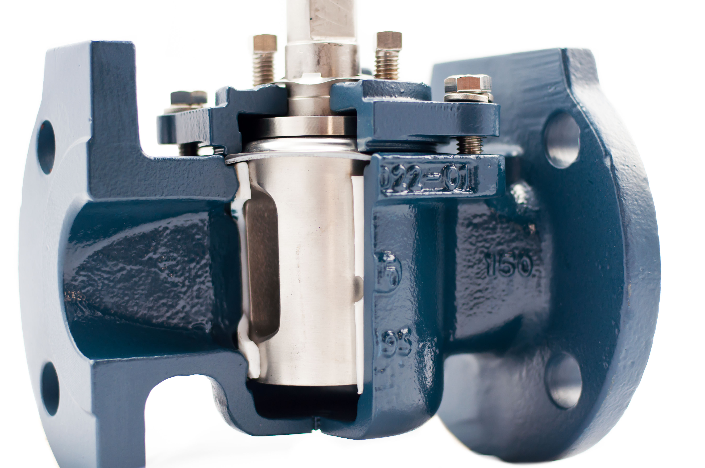

Plug valves are rotary valves in which a plug-shaped closure member is rotated through increments of 90° to engage or disengage a porthole or holes in the plug with the ports in the valve body. The shape of the plug may thereby be cylindrical or tapered.
Eccentric plug valves, like segmented ball valves, display greater performance than their traditional counterparts for application with solid suspensions and slurries. They also provide increased control compared with traditional plug / ball valves.
Lubricated plug valves use a lubricating material to provide the seal between mechanisms and the fluid. This lubricant can often be topped up through a port on the valve when levels get too low.
Where lubricated plug valves use a lubricant to provide a seal between mechanisms and the fluid, non-lubricated plug valves are solely reliant on a polymetric sleeve for sealing. Non-lubricated plug valves perform better under extreme temperature conditions where the lubricant might otherwise freeze or evaporate.
The port of a plug valve is the gap through which the fluid flows. This can take the form of a variety of geometries. Some examples include: Diamond, Rectangular, or Round.
Plug valves are actuated by quarter-turn, rotary actuators. This could be manual through the use of a hand-wheel or basic lever, or electric using a motor and gear box. Rotational actuation is also possible using pneumatic and hydraulic actuators. This could be a piston or a diaphragm connected to a rack and pinion or scotch yoke to convert linear to rotational motion.